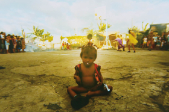

Alipato – The Very Brief Life of an Ember
KHAVN
Philippinen / D 2016
87 min – HD – Tagalog – Deutsche Premiere
B: Khavn, Achinette Villamor – Mit Marti San Juan, Dido De La
Paz, Robin Palmes, Khavn, Bing Austria
K: Albert Banzon – S: Carlo Francisco Manatad – SD: Fabian
Schmidt – P: Khavn, Achinette Villamor, Stephan Holl – V: Rapid
Eye Movies
khavn.com
„Alipato“, das ist die verglimmende Asche,
die durch die Luft fliegt, ephemer und erhaben, Bote einer
vorausgegangenen Glut. Eine Metapher für den neuesten Film des
philippinischen enfant terrible Khavn de la Cruz: Mondomanila,
im Jahr 2031, Mega-City des Slums. Die Ärmsten der Armen leben
von schmutzigen Geschäften mit der Kohlegewinnung, eine Gang von
Straßenkids stiehlt und mordet in der „Schwarzen Stadt“. In
fantastischen, tableauhaften Genrebildern wird der Alptraum in
der philippinischen Hauptstadt offenbar. Ein untergründiger
Kommentar zum aktuellen Despotismus und „State of Lawlessness“
Duterte'scher Prägung.
samstag 8 okt 22.30 uhr werkstattkino
KHAVN kulas talon Delakrus geb. 1973 in
Manila. Filmemacher, Dichter, Autor und Komponist. Er ist der
produktivste der Filmemacher der „digitalen Generation”. Seit
2002 Leiter des philippinischen MOV Digitalfilmfestivals. Sänger
und Komponist in der Pianokombo „Delakrus” und der Rockband „The
Brockas”.
Filme (Auswahl) Squatterpunk 2007 (2. UX) – Ultimo 2007 (2. UX) Philippine Bliss 2008 (3. UX) – The Middle Mystery of Kristo Negro 2009 (4. UX) – Mondomanila 2012 (7. UX) – The Ruined Heart 2014 Desaparadiso 2015 – Simulacrum Tremendum 2016 – Alipato 2016